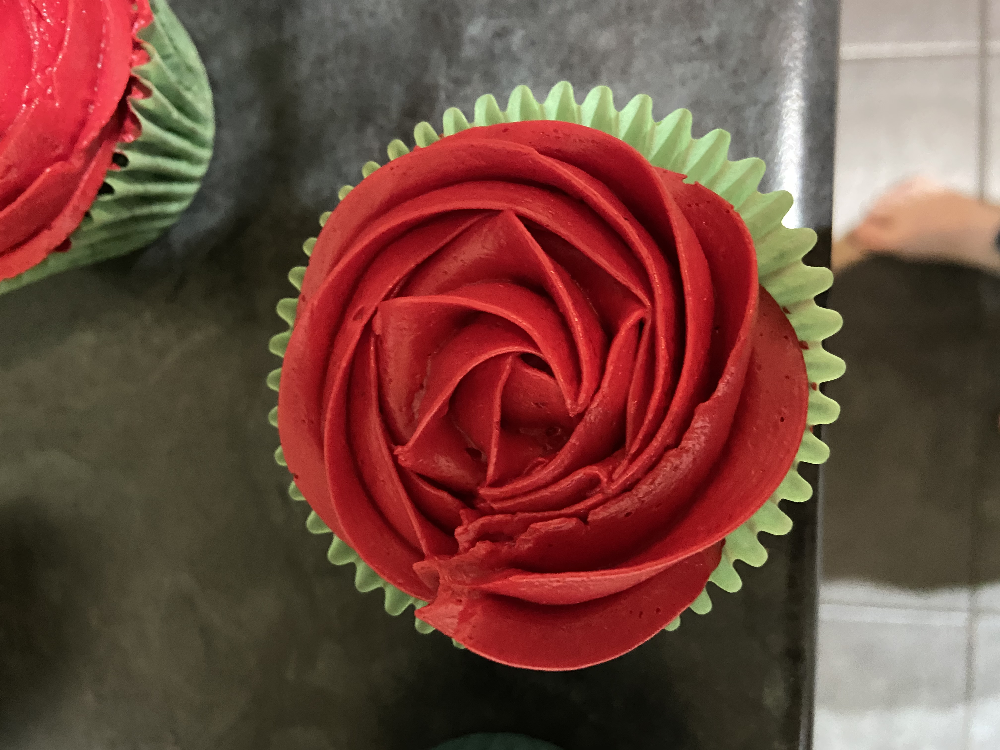

Enchanted rose cupcakes

Ingredients
Butter
Flour
Milk
Vanilla extract
Sugar
Method
Cream the butter and sugar together
Add the milk and vanilla extract
Incorporate the flour
Bake for 20 minutes at 280c